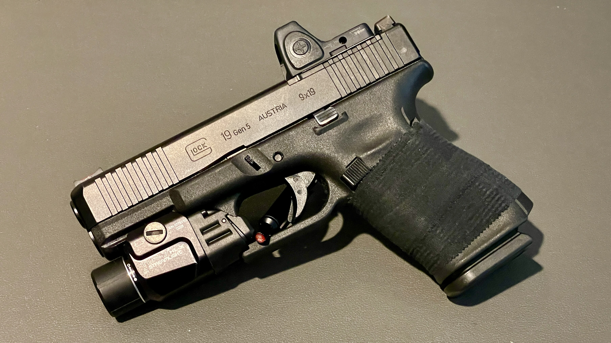

Weapon lights are one of those things people love to overcomplicate. Forums, Reddit, YouTube, everybody arguing lumens, candela, beam patterns like they're running night ops every weekend.
Most of us aren't.
So let's talk about three lights from Streamlight that actually matter: the TLR-1 HL, the one most of us already own; the TLR-1 HLX, the upgraded version that fixes what needed fixing; and the TLR-7 HLX, the one that actually makes sense for carry.
This is not a SWAT review. This is real life, just a review from a responsible concealed carrier who wants to accurately and quickly identify and assess a threat in less than perfect lighting.
| TLR-1 HL | TLR-1 HLX | TLR-7 HLX | |
|---|---|---|---|
| Form Factor | Full-size | Full-size | Compact |
| Best For | Home defense / range | Home defense / duty | Concealed carry |
| Candela | Lower | Higher | Improved |
| Beam | Wider | Tighter hotspot | Focused |
| Holster Support | Wide | Wide | Wide |
| Carry Comfort | Bulky | Bulky | Best |
The One You Already Have: TLR-1 HL
Let's be honest. The TLR-1 HL has been doing the job for years. It's bright. It's reliable. It's been mounted on everything from nightstand guns to range toys to duty setups. And for most people, it's still enough.
What It Does Well
- It just works
- Durable and proven
- Wide holster support
- Plenty of light for realistic situations
Where It Falls Behind
- Candela is lower than newer options
- Beam can get washed out in busy lighting
- A little chunky by today's standards
Translation: you're not under-equipped. But you're also not running the best thing available anymore.
The Upgrade That Actually Matters: TLR-1 HLX
The HLX is not a gimmick upgrade. It fixes a real problem. More candela. Tighter beam. More usable light. And that matters way more than people think.
Let's Talk About the Thing Nobody Explains Well
Everyone throws around lumens. Cool, that tells you how much light you have. Candela is what actually lets you use that light. Because real life doesn't happen in a dark, empty room.
You've got lights on inside a house, TV glare, streetlights through windows, reflections bouncing back at you. Picture this: you're standing at the end of a hallway looking into a lit room. There's overhead lighting in the hall and an open, lighted window perpendicular to the person in the room. Those are two photonic barriers your light has to punch through to illuminate that person's hands, so you can tell if it's a phone or a weapon.
The HLX cuts through that. You get a defined hotspot, you can see what's in someone's hands, and you're not fighting your own light. That's the difference between "yeah it's bright" and actually being useful.
The One You'll Actually Carry: TLR-7 HLX
Most people aren't strapping a full-size light to a concealed carry gun and living comfortably. That's where the TLR-7 HLX comes in. Smaller. Lighter. Way more practical. And finally powerful enough to not feel like a compromise.

What It Does Right
- Fits compact and carry guns better
- Comfortable for daily carry
- Noticeably improved output over older TLR-7 models
What You Give Up
- Some throw
- Some performance at distance
But ask yourself: if something happens, how far away is it really happening? This light is built for that distance.
Size Matters More Than Specs
Here's where most people get it wrong, they chase numbers instead of being honest about how they actually use their gear.
TLR-1 HL
- Home defense
- Range use
- Open carry / duty
- Not ideal for concealment
- Not ideal for daily wear
TLR-1 HLX
- Home defense
- Duty setups
- Messy lighting situations
- Not ideal for concealment
- Not ideal for daily wear
TLR-7 HLX
- Concealed carry
- Smaller / compact guns
- Actually keeping it on you
- Not ideal for long distance
- Not ideal for outdoor throw
Holsters: It's Not That Deep
People love to make this sound complicated. Reality: the TLR-1 HL and HLX are close enough that most holsters will work for both. Same story with the TLR-7A and TLR-7 HLX. Retention is usually solid. Fit might not be perfect, but it works. Just don't be lazy, test your setup before you trust it.
So What Should You Actually Buy?
You Already Have a TLR-1 HL
Keep it. Train with it. Upgrade to the HLX if you want better performance in messy lighting, that's a real, noticeable improvement.
You're Setting Up a Full-Size Gun
Get the HLX and be done with it.
You're Carrying Every Day
Get the TLR-7 HLX. Not because it's trendy, because you'll actually keep it on the gun.
Most people don't need the brightest light on the market. They need enough output to identify a threat, enough candela to see clearly under stress, and a setup they'll actually carry consistently. The TLR-1 HL proved itself. The HLX makes it better where it counts. The TLR-7 HLX finally makes compact lights make sense. If your light comes on, it's because something already went wrong. At that point, you don't care about specs. You care about what you can actually see.